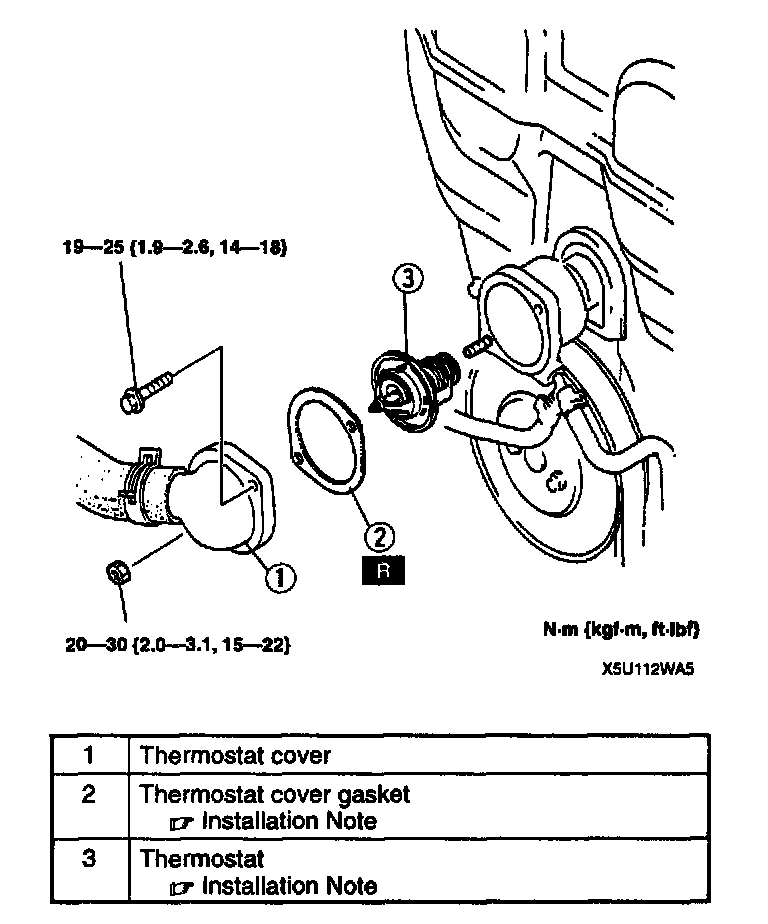
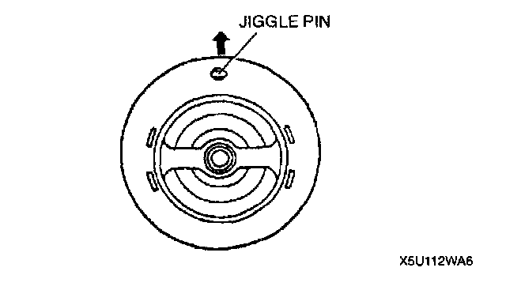
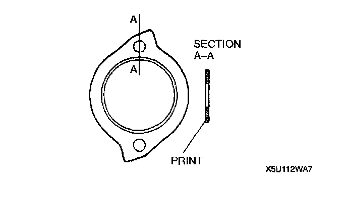

Thermostat: Service and Repair

THERMOSTAT REMOVAL/INSTALLATION
1. Disconnect the negative battery cable.
2. Remove the air hose.
3. Drain the engine coolant.
4. Remove in the order indicated in the table.
5. Install in the reverse order of removal.
Thermostat Installation Note

^ Install the thermostat into the cylinder head with the jiggle pin at the top.
Thermostat Cover Gasket Installation Note

^ Install a new gasket with the seal print side facing the cylinder head.